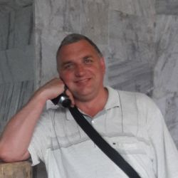
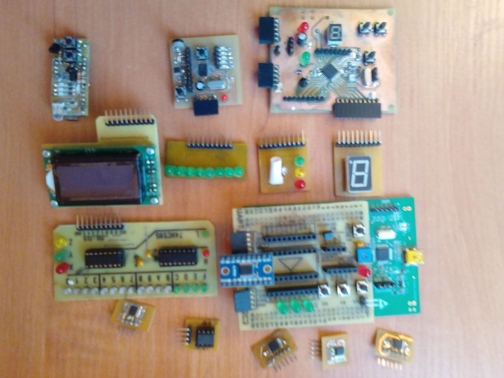
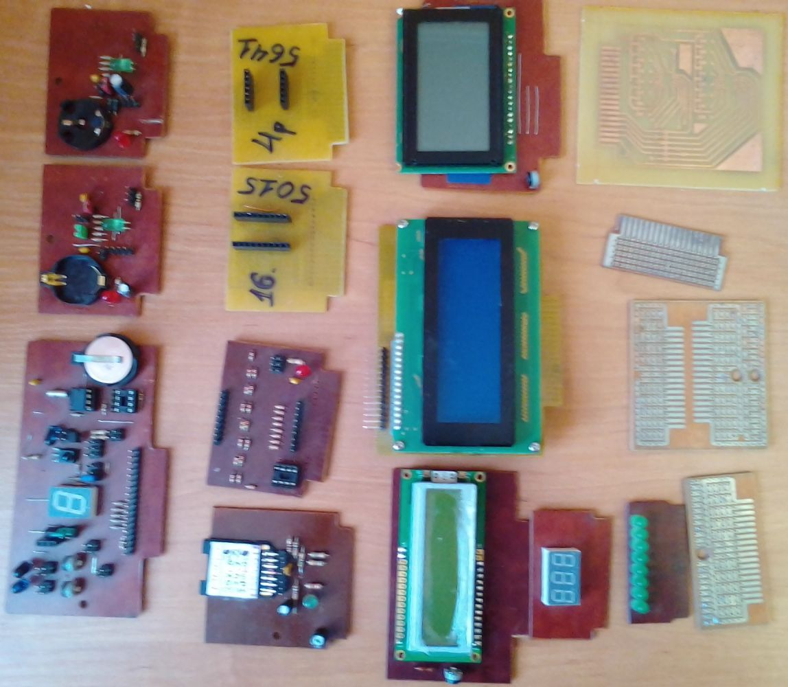
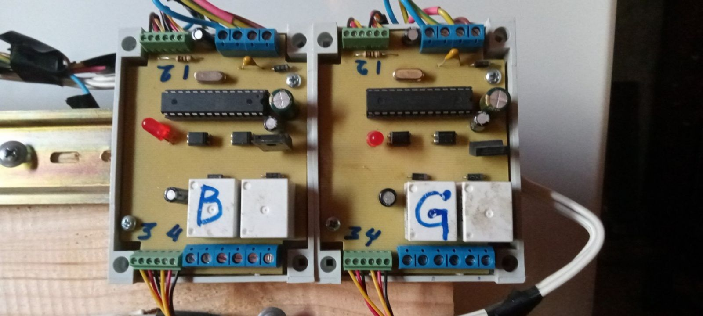
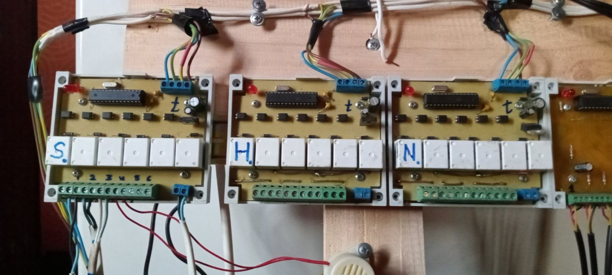

Ахрамчук Андрей
Мои проекты и разработки. Тестовая страница

Начало пути: МК-54, ПК РК86, FORTH и ассемблер 8080
Программируемый калькулятор МК-54. Участвовал в обсуждениях программ на программируемых калькуляторах в журнале Наука и жизнь. Написание расчетных программ для курсовых и домашних задач в студенческие годы. Изучение алгоритмизации и программирования в целом.
Написание симулятора для этого калькулятора на языке программирования бейсик под ПК РК86.
РК86 – радиолюбительский компьютер на CPU i8080.
Имелись в наличии модели ПК Криста и МВЦ Партнер. Изучил на нем бейсик, Forth, ассемблер 8080. На бейсике созданы: электронные таблицы, программы для расчетов по курсовым работам, Анализатор игр.
Разрабатывал модули расширения для этого ПК.
Язык FORTH был изучен на уровне ассемблера 8080 и модифицировался мной несколько раз.
На ассемблере 8080 были созданы: База данных – картотека статей журнала Радио, свой вариант языка высокого уровня СКАТ, создающий текст ассемблерного листинга для дальнейшей компиляции средствами ассемблера. Создана мини-операционная система для хранения программ на кассетном магнитофоне и работе с этими дисками на уровне файлов. Участие и отметка за оригинальность конкура DUMCOR журнала Радио. № 1992-7-23. Также были написаны с нуля игры: Змейка и Тетрис.
При обучении в ВУЗе мной были созданы: Показательная экспертная система определения болезней в диалоговом режиме. Был изучен паскаль ДВК и несколько диалектов бейсика, ОС Рафос - аналог DOS, ассемблер i86 и множество прикладных программ и оборудования. На ассемблере IBM PC был создан драйвер русской клавиатуры ввода и вывода.
На TurboBasic была написана и защищена на отлично дипломная работа по расчету и анализу кормления сх животных при массовых заболеваниях. Отмечена как первая дипломная работа в СССР по ветеринарии с применением программирования.
Программирование и администрирование (1995–2017)
Был программистом на предприятии в системе заготовки и хранении зерна. Украина.
Самостоятельная разработка с 1995 года комплекса программного обеспечения изначально с применением электронных таблиц SuperCalk (файлы, макросы, автоматизация) с дальнейшим переводом на язык Dbase 3-4, FoxBASE, FoxPro Dos и Windows, Visual FoxPro 3-9 версий.
Программный комплекс включал в себя Расчетное ПО по бухгалтерии, Системе расчетов и подработки зерна, Работе с клиентами и договорами, Заработной плате, работе с Пайщиками, шифрованной отчетности для проверяющих органов, небольших программ для сотрудников и обслуживающего ПО и утилиты. Документооборот выводился в Excell, WinWord, OpenOffice и стандартными средствами VFP. Была создана системы автоматического ввода данных с промышленных грузовых весов по RS232. Весь комплекс работал в сети с единой базой данных на специальном сервере под управлением Linux Slackware. В плане администрирования создана система автосохранения всех данных, почтовая система получения электронной почты предприятия и автосортировки по сотрудникам, работа с учетом Интернет (трафик предприятия был 150 мегабайт в месяц), система документооборота, различные утилиты и скрипты. Были созданы утилиты для построения интерактивной справочной системы, восстановления баз данных, учета работы пользователей в сети и многое другое. Выполнялось полное обслуживание и ремонт всей оргтехники.
Были созданы коммерческие продукты и зарегистрировано ЧП по их продвижению. За время этой деятельности были разработаны на заказ и внедрены программные продукты для предприятий водоканала, райсельхозснаба, районной мастерской по ремонту сх техники, крупных колхозов и совхозов, частников и фермеров, Система анализа прайслистов Excell поставщиков и автоматический их парсинг в систему учета коммерческой медицинской аптеки. Все продукты были разработаны на Visul Foxpro и имели инсталлятор и развитую интерактивную справочную систему, инструкцию по использованию и сопровождение с обучением. Был создан сайт для продвижения своих работ. Некоторые из этих продуктов работают по сей день, более 20 лет.
Для упрощения создания FORTH системы с помощью FoxPro создан автоматический генератор и тестировщик построения текстов шитого кода на языке ассемблера.
Всего под флагом Foxpro работал с 1995 по 2017 год.
Системное администрирование, сервис и Web-разработка
Как программист и системный администратор Пенсионного фонда участвовал в создании компьютерной сети (аналоговой, коаксиал) по собственной инициативе на Win3.11. Установлена сеть и соответствующее программное обеспечение. Для инспекторов и руководства созданы программы тестирования баз данных на предмет правильности ввода и актуальности данных, инструменты более простого и качественного анализа данных, фильтры построения отчетов и выборок, построении документооборота. Выполнялось полное обслуживание всей оргтехники и обучение.
В течении 4 лет самостоятельно проводил доставку, сборку и продажу ПК, телевизоров. Ремонт и обучение, обслуживание и консультации как предприятий, так и частных лиц.
В течении 6 лет работал на фирме по тестированию новых моделей и сборке ПК, ремонту, доставке и обслуживанию, обучению, установке программного обеспечения, операционных систем и драйверов. Самостоятельно разрабатывал автозапускаемые сборники утилит с меню на DVD дисках для тестирования и обслуживания ПК, автоустановки ПО, восстановления данных. Выполнял ремонт, тестирование и заправку картриджей для порошковых принтеров и ксероксов. Проводил видеомонтаж и обработку видео под заказ с перезаписью с видеокассет на DVD диски с меню. Заменял администраторов на время отпусков по работе в провайдерском интернет-центре. Проводил анализ, ремонт и сборку б\у компьютеров. Имел поощрения за рационализаторскую деятельность.
Работал системным администратором нескольких Интернет магазинов музыкального центра города. Обслуживание сети, сервера, камер видеонаблюдения и их работы в YouTube, создании и хранении архивов данных в автоматическом режиме. Как WEB программист принимал участие в улучшении внешнего вида сайтов, создании дополнительных опций, в том числе с применением сервисов GOOGLE и совместной работе с создателями движков интернет магазина. Также модифицировал интернет магазины и лендинги услуг и товаров этой фирмы. Работа велась с применением HTML, CSS, PHP, JQUERY, MySQL. Был создан минисервер для внутренних работ на основе мини ПК OrangePi PC с Linux Debian.
Микроконтроллеры и электроника (с 2007 года)
Изучал и разрабатывал проекты на микроконтроллерах с 2007 года. Создал множество макетных плат для изучения МК AVR, PIC, STM8, STM32, а также плат расширения к этим макеткам. Были и коммерческий разработки для фирмы, где работал и для своих знакомых.
За все время создано:
- Зимняя автоматика для собственной кролиководческой фермы-16 модулей автонагрева в зимний период.
- FUSE доктор для разлочивания МК AVR – только плата и конструкция.
- Инкубаторы разные.
- Управление камерами-обманками.
- Создан пакет макетных плат для построения и изучения сети из микроконтроллеров с применением радиоканала, RS485, UART и различных переходников, оптоизоляторов и прочее.
- Разрабатывался и мини ПК на основе процессоров Intel 8080 и 8085 - ностальгия :)
- Под заказ разработан и создан с нуля прибор для восстановления прошивок нескольких видов картриджей лазерных принтеров с индикацией и меню выбора модели принтера.
- Система для экономии электроэнергии при использовании водонагревателя.
- Система автоматизации работы с водоснабжением двора из обычного колодца, уровень которого понижался ниже критического в сильную жару – контроль уровня воды, набор воды в резервуары, кондиционирование кроликофермы в сильную жару, слежение за всеми уровнями, несколько режимов работы.
- Создана домашняя охранная система с применение датчиков движения и герконов, камер видеонаблюдения и обманок, системы оповещения.
Разработана коммерческая система автоматизации умного дома – отопление со взамоучетом нескольких котлов, жидкостных солнечных батарей, бани, бассейна и хозяйственных построек. Несколько контуров отопления - на каждую комнату загородного особняка. Использовалось большое количество датчиков, реле, сервокранов. Как удлинитель использовался радиоканал на NRF24. Собственный протокол обмена между узлами сети на основе RS485. На DIN-рейку. Центральным узлом являлся OrangePI PC с Linux Debian и OpenHAB. Работа, обслуживание и тестирование через интренет, с локального ПК или смартфона. Дополнительно были разработаны переходники, тестовые платы, блоки питания, конвертеры и изоляторы сигналов. Система разрабатывалась с нуля под заказ.
Все разработки были на языках ассемблера, микропаскале, языке С. Использовались P-CAD, SprintLayout, KiKAD, DipTrace, Specctra.
Разработка и изготовление печатных плат, схемотехника и подбор-приобретение элементарной базы велась самостоятельно, в домашних условиях. Имелась полностью укомплектованная своя лаборатория с необходимыми приборами, материалами и инструментами для проведения всех работ.








Ещё немного о себе
Игра, созданная на языке LUA: